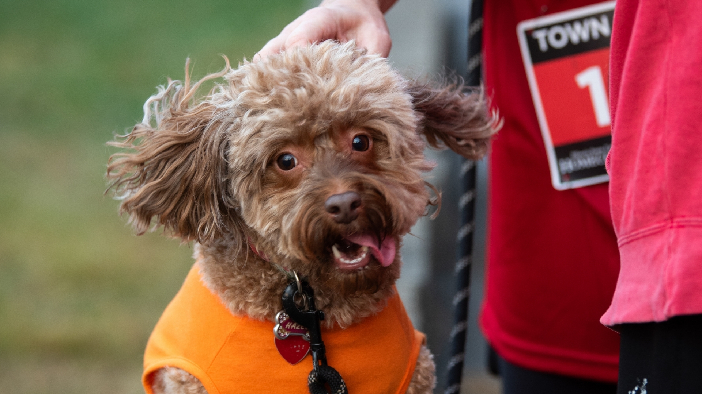

Address: Campus Box 5750
Phone: (309) 438-2875
Director: Colby Jennings
Degrees Offered: B.A., B.S.
The interdisciplinary Creative Technologies major emphasizes design and practice in the integration of digital technologies and the fine arts. In addition to foundational study across the fine arts, the major provides training and experiences across a range of creative/technical fields including video, sound, electronic music, music production, gaming, motion graphics, interactivity, AR/VR, UI/UX, mobile, web, and computer programming concepts.
Students will be allowed to continue in the Creative Technologies program if they met and continue to maintain a cumulative GPA of 2.50 and have demonstrated competency through an intermediate portfolio review.
Note:High achieving students with a cumulative GPA of 3.20 or higher may apply to the accelerated sequence one year before completion of their undergraduate degree. This sequence allows students to take up to 12 hours of approved graduate courses that will count for both the undergraduate and graduate program in Creative Technologies. Students can then apply to the Creative Technologies graduate program in the spring of their senior year. Enrollment in the Accelerated Sequence does not guarantee final admission into the Creative Technologies graduate program. For additional information on minimum requirements for admission and the application and selection process, visit IllinoisState.edu/Majors and the Creative Technologies Program advisor.
The Audio and Music Production sequence provides concentrated study in sound recording, audio production, sound design, music composition, theory, and business and entrepreneurship practices, along with a host of elective experiences across a range of creative/technical fields including video, sound, electronic music, music production, gaming, motion graphics, interactivity, AR/VR, UI/UX, mobile, web, and computer programming concepts.
The Game Design sequence provides concentrated study in game design and production, along with a host of elective experiences across a range of creative/technical fields including video, electronic music, music production, motion graphics, interactivity, AR/VR/XR, UI/UX, mobile, web, and computer programming concepts.
The Interdisciplinary Technologies sequence provides concentrated study in mobile, web and computer programming concepts, UI/UX, motion graphics, and interactivity along with a host of elective experiences across a range of creative/technical fields including sound, electronic music, music production, AR/VR/XR, and game design.
Introduction to the history, theories, current trends, practices, and core media in the digital arts.
This course presents the fundamentals of audio theory as applied to the physics and aesthetics of sound.
This course covers the aesthetics and technical skills required for the recording and sampling of instruments and the human voice.
This course covers the study of foundational music concepts, including basic theory, history, genres, and forms.
This course introuces audio production techniques within a digital audio workstation (DAW) environment.
Theory, technical skills, and design concepts for the creation of standards-compliant web sites. Formerly CTK 301.
Text-based, object-oriented, computer programming concepts for areas including interactive design, user interfaces, data visualization, and gaming. Formerly CTK 302.
Introduction to digital audio and aesthetic principles of sound.
Creative and interdisciplinary experiences in solo and ensemble performance integrating computer technology into music, dance, performance art, or theatre production.